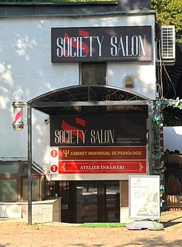
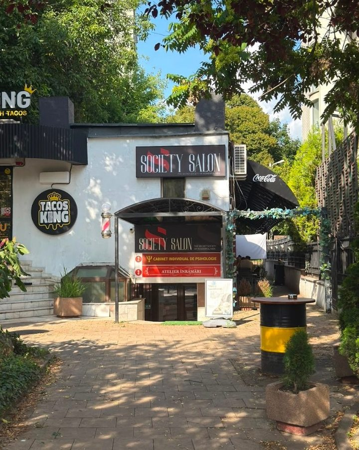

Master
Cei mai experimentați din echipă. Pentru o schimbare mare sau când știi exact ce vrei.The most experienced on the team. For a big change, or when you know exactly what you want.
The secret society of powerful men

Frizerie pentru bărbați, în Copou. Ușa e în curtea de pe Bulevardul Carol I nr. 26–28, la demisol. A men's barbershop in Copou. The door is in the courtyard at 26–28 Carol I Boulevard, on the lower ground floor.
5,0 pe Google · 69 de recenzii 5.0 on Google · 69 reviews
Ce facemWhat we do
Cât costă: Google afișează un interval de 80–120 de lei. Prețul exact depinde de serviciu și de nivelul frizerului, și îl vezi pe MERO înainte să confirmi. Prices: Google shows a range of 80–120 lei. The exact price depends on the service and the barber's level, and MERO shows it before you confirm.
Clasic sau modern, cu foarfeca sau cu mașina. O tunsoare care arată bine și a doua zi dimineață.Classic or modern, scissors or clippers. A cut that still looks right the next morning.
Skin, low, mid sau high. Trecerile se lucrează treaptă cu treaptă, fără linii vizibile.Skin, low, mid or high. Blended step by step, with no visible lines.
Formă, lungime și contur, cu linii curate trase la brici.Shape, length and outline, with clean lines finished by razor.
Bărbieritul clasic: prosop cald, brici și o piele liniștită la final.The classic shave: hot towel, straight razor and calm skin at the end.
Firele albe estompate discret, ca rezultatul să arate natural.Greys softened discreetly, so the result looks natural.
Pachetul complet al casei. Ce include și cât durează vezi pe MERO.The house's full package. MERO shows what it includes and how long it takes.
Master · Senior · JuniorMaster · Senior · Junior
Alegi nivelul frizerului când te programezi. Oricare ar fi, tunsoarea se face după aceleași reguli ale casei.You choose the barber's level when you book. Whichever you pick, the cut follows the same house rules.
Cei mai experimentați din echipă. Pentru o schimbare mare sau când știi exact ce vrei.The most experienced on the team. For a big change, or when you know exactly what you want.
Experiență solidă, orice stil: de la tunsoarea clasică la fade.Solid experience in any style, from a classic cut to a fade.
La început de drum, pe aceleași standarde ale casei.Early in the craft, working to the same house standards.
Nivelurile, frizerii și programul fiecăruia sunt pe pagina de pe MERO.Levels, barbers and each barber's schedule are on the MERO page.
Recenzii GoogleGoogle reviews
5,0 din 5, din 69 de recenzii pe Google.5.0 out of 5, from 69 Google reviews.
Rezumat al recenziilor publice de pe Google, nu citate.A summary of public Google reviews, not quotes.

Demisol · CopouLower ground floor · Copou
Suntem într-o curte, nu la stradă. Prima dată, urmează aceste trei repere:We're in a courtyard, not on the street. The first time, follow these three landmarks:
De pe bulevard intri în curtea cu copaci.From the boulevard, walk into the tree-lined courtyard.
Tacos King e în stânga. Mergi înainte pe alee.Tacos King is on your left. Keep walking along the path.
Ușa e sub firma Society Salon, cu stâlpul de frizerie în stânga. Suntem la demisol.The door is under the Society Salon sign, with the barber pole on its left. We're on the lower ground floor.
Bulevardul Carol I nr. 26–28, demisol · 700505 Iași
Programări și contactBookings and contact
MERO
Alegi serviciul, nivelul și ora, online.Pick the service, level and time online.
de confirmatto confirm
Programul zilnic îl completăm cu salonul.We'll fill in the weekly hours with the salon.
de confirmatto confirm
Numărul de pe fișa Google, confirmat de salon.The number on the Google listing, confirmed by the salon.